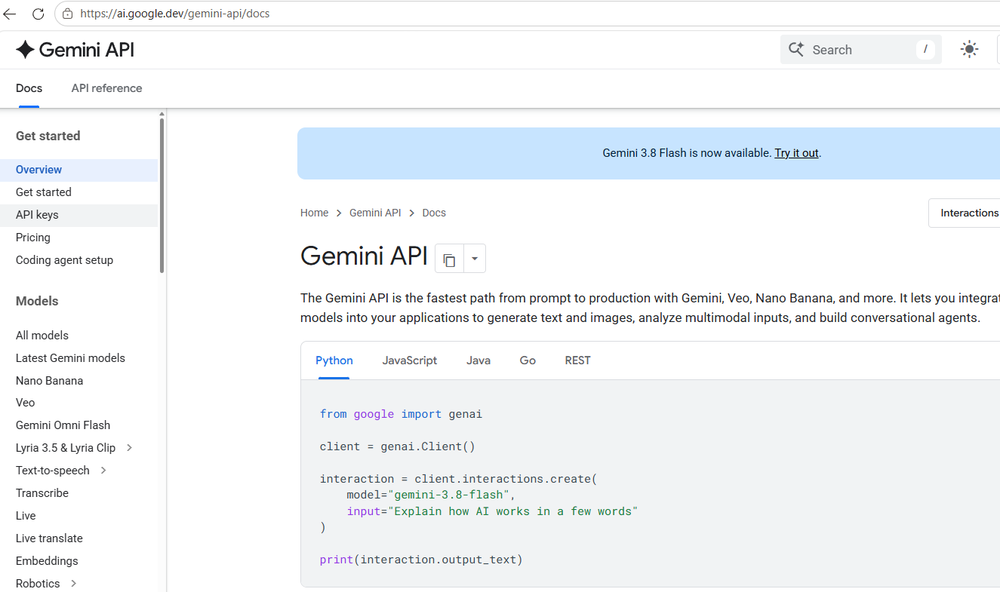
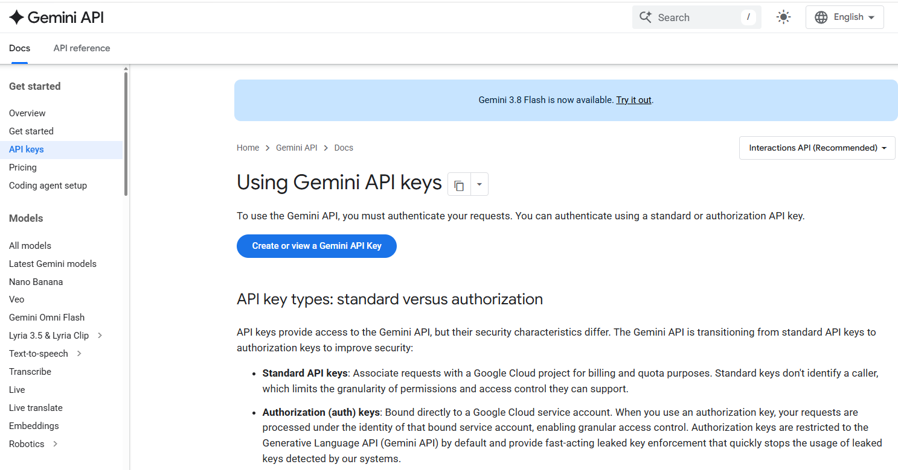
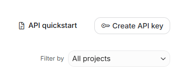
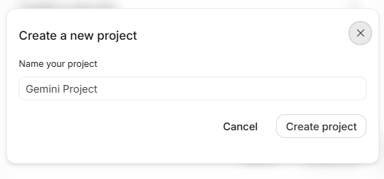
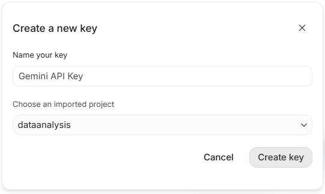
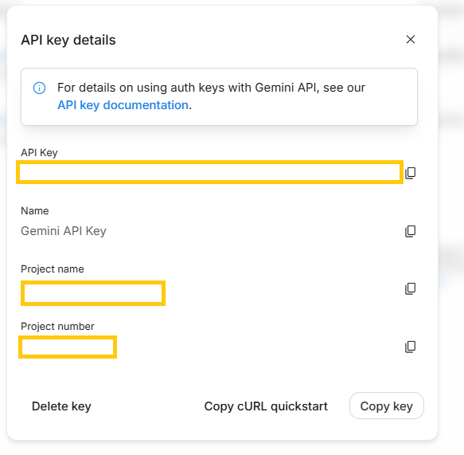
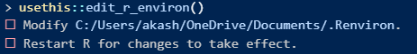
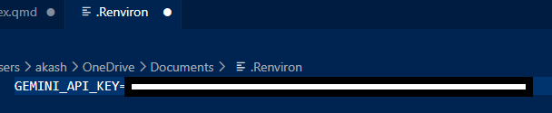
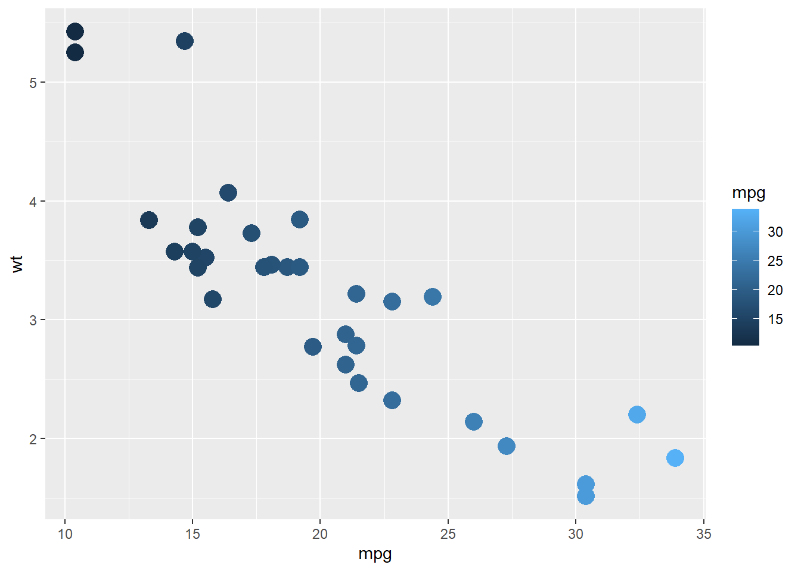

# in R console type the following. This will open the .Renviron file
usethis::edit_r_environ()From Coding to Data Analysis: Automatic Report Generation Using Gemini in Quarto
Step-by-step guide to automatic AI analysis using Quarto.
Abstract
ellmer package is used to generate AI analysis of graphs and econometric models.
Generate Gemini API
Step-1: Visit “https://ai.google.dev/gemini-api/docs”

Step-2: Create API Key by login to your gmail account

Step-3: Click on “Create API Key” on the top right corner

Step-4: Create new project

Step-5: Give a name and click create

Step-6: Copy the API Key

Add API key in R/ R Studio / Positron

Paste the API Key in the .Renviron after typing “GEMINI_API_KEY=”

Load Necessary Packages
The ellmer package is used to initiate chat with Gemini
library(ellmer)
library(magick)
libraty(ggplot2)
library(dplyr)
library(Statamarkdown)
library(knitr)Automatic AI Analysis of Graph from R
# Use ggplot2 and mtcars data to plot a scatter plot
plot1<-ggplot(data=mtcars,aes(x=mpg,y=wt,col=mpg))+
geom_point(size=5)
# Save the plot
figure1<-"figure1.png"
ggsave(figure1,plot=plot1)
# Begine the chat using gemini-3.1
chat1<-chat_google_gemini(
model="gemini-3.1-flash-lite"
)
# Create AI output with the saved R plot and custom prompt
ai_output1<-chat1$chat(
content_image_file(figure1),
"Describe the plot.
Write in journal publication standard.
Do not write unnecessary things.
Make no mistake"
)
The provided scatter plot illustrates the relationship between vehicle weight (wt) and fuel efficiency (mpg), utilizing a color gradient to represent the mpg values. Data points are plotted with mpg on the x-axis and wt on the y-axis.
Key Observations: * Correlation: There is a strong negative correlation between vehicle weight and fuel efficiency. As the weight of the vehicle increases, the miles per gallon consistently decrease. * Distribution: The majority of the observations are clustered between 15 and 22 mpg, corresponding to a weight range of approximately 2.5 to 4.0 units. * Outliers/Extremes: Two vehicles exhibit the highest weight (exceeding 5.0) and lowest fuel efficiency (~10 mpg), while the highest fuel efficiency (exceeding 30 mpg) is associated with the lowest weight range (under 2.0). * Color Mapping: The color scale confirms the linear trend, with darker blue shades representing lower mpg values (15–20) corresponding to higher wt, and lighter blue shades representing higher mpg values (25–30+) corresponding to lower wt.
Automatic AI Analysis of Regression Result from R
# Regression Analysis R
model1<-lm(mpg~wt+factor(gear),data=mtcars)
# Summarise the regression model1_result
summary(model1)
# Capture the output of the regression result
model1_result<-capture.output(summary(model1))
# Begine the chat using gemini-3.1
chat1<-chat_google_gemini(
model="gemini-3.1-flash-lite"
)
# Create Custome prompt with the captured regression result
prompt_reg<-paste(model1_result,
"Analyse this regression result.
Write the regression result in a single paragraph.
Write in full professional publication grade.
Make no mistake."
)
# Create AI output analysis of the regression
ai_output2<-chat1$chat(prompt_reg)
Call:
lm(formula = mpg ~ wt + factor(gear), data = mtcars)
Residuals:
Min 1Q Median 3Q Max
-3.517 -2.358 -0.355 1.850 5.821
Coefficients:
Estimate Std. Error t value Pr(>|t|)
(Intercept) 35.2156 2.8690 12.274 8.72e-13 ***
wt -4.9090 0.7112 -6.902 1.68e-07 ***
factor(gear)4 2.1631 1.4485 1.493 0.147
factor(gear)5 -0.9121 1.7519 -0.521 0.607
---
Signif. codes: 0 '***' 0.001 '**' 0.01 '*' 0.05 '.' 0.1 ' ' 1
Residual standard error: 2.915 on 28 degrees of freedom
Multiple R-squared: 0.7887, Adjusted R-squared: 0.766
F-statistic: 34.83 on 3 and 28 DF, p-value: 1.375e-09The results of the multiple linear regression analysis, aimed at predicting fuel efficiency (\(mpg\)) as a function of vehicle weight (\(wt\)) and transmission configuration (\(gear\)), demonstrate that the model is statistically significant (\(F(3, 28) = 34.83\), \(p < 0.001\)) and explains 76.6% of the variance in the response variable (adjusted \(R^2 = 0.766\)). Vehicle weight is a highly significant negative predictor of fuel efficiency, with an estimated effect of \(-4.91\) mpg per unit increase in weight (\(t = -6.902, p < 0.001\)), holding transmission type constant. In contrast, the categorical indicator for transmission gears does not reach statistical significance at conventional levels, as neither the four-gear (\(b = 2.163, p = 0.147\)) nor the five-gear (\(b = -0.912, p = 0.607\)) configurations show a discernible difference in fuel economy compared to the three-gear baseline. The model’s residual standard error of 2.915 suggests moderate prediction variability, and the overall robustness of the intercept (\(b = 35.216, p < 0.001\)) underscores that weight remains the primary driver of variation in vehicle fuel efficiency within this dataset.
Automatic AI Analysis of Regression Result from STATA in Quarto
STATA Chunk
# Load nlsw88 data in stata
sysuse nlsw88, clear
# Store the STATA result log file in txt format
log using "reg_stata.txt", text replace
# Perform the linear regression in STATA
regress wage ttl_exp i.race i.married
# Log close
log closeR Chunk
# Import the STATA result in R
reg_output_stata<- readLines("reg_stata.txt")
stata_text<-paste(reg_output_stata, collapse = "\n")
# Begine the chat using gemini-3.1
chat1<-chat_google_gemini(
model="gemini-3.1-flash-lite"
)
# Create Custom Prompt also include the STATA result
prompt_stata_reg<-paste(
stata_text,
"Analyse this STATA regression result.
Write the regression result in a single paragraph.
Write in full professional publication grade.
Make no mistake."
)
# Create AI output analysis of the STATA regression result
ai_output3<-chat1$chat(prompt_stata_reg)Unknown #command
Unknown #command
Unknown #command
Unknown #command
(NLSW, 1988 extract)
-------------------------------------------------------------------------------
name: <unnamed>
log: D:\Work\2026 July-December\data_analysis\reg_stata.txt
log type: text
opened on: 25 Sep 2026, 23:29:30
Source | SS df MS Number of obs = 2,246
-------------+---------------------------------- F(4, 2241) = 50.68
Model | 6169.32107 4 1542.33027 Prob > F = 0.0000
Residual | 68198.6463 2,241 30.4322384 R-squared = 0.0830
-------------+---------------------------------- Adj R-squared = 0.0813
Total | 74367.9674 2,245 33.1260434 Root MSE = 5.5165
------------------------------------------------------------------------------
wage | Coefficient Std. err. t P>|t| [95% conf. interval]
-------------+----------------------------------------------------------------
ttl_exp | .3309527 .0253054 13.08 0.000 .2813283 .3805772
|
race |
Black | -1.454648 .2722801 -5.34 0.000 -1.988596 -.9207008
Other | .4188818 1.090448 0.38 0.701 -1.719512 2.557276
|
married |
Married | -.5738186 .2489125 -2.31 0.021 -1.061942 -.0856955
_cons | 4.359611 .393963 11.07 0.000 3.58704 5.132181
------------------------------------------------------------------------------
name: <unnamed>
log: D:\Work\2026 July-December\data_analysis\reg_stata.txt
log type: text
closed on: 25 Sep 2026, 23:29:30
-------------------------------------------------------------------------------A linear regression analysis conducted on a sample of 2,246 individuals reveals that total work experience, race, and marital status significantly predict hourly wage variation, with the model explaining 8.3% of the total variance (F(4, 2241) = 50.68, p < 0.001). Total work experience demonstrates a positive and statistically significant association with hourly earnings, where each additional year of experience is linked to a $0.33 increase in wages (p < 0.001, 95% CI [0.28, 0.38]). Regarding categorical predictors, individuals identifying as Black earn significantly lower hourly wages compared to the reference group (β = -1.45, p < 0.001), whereas the “Other” racial category does not show a statistically significant wage differential (p = 0.701). Furthermore, marital status exerts a statistically significant downward pressure on earnings, with married individuals earning $0.57 less per hour than unmarried counterparts (p = 0.021, 95% CI [-1.06, -0.09]). While the model remains statistically robust, the modest R-squared value indicates that additional unobserved factors are likely determinants of wage variance in the population.